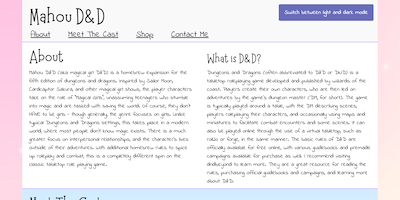
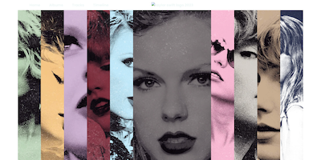

GIT 215 - Introduction to Web Authoring
In this course, students are introduced to HTML5 and CSS3. This course focuses on semantics for more accessible HTML and asks students to follow basic best practices for styling on the web.
Final Project Requirements
The final project has varied over different semesters, but tests the student's ability to write HTML and CSS for given content to create two of the pages for a three page fixed-width static website.
For the hotel/resort project, students were given text content, image content, and wireframes. Students were asked to choose a name for their hotel, as well as an image to use as the favicon and their own font and color scheme choices. The site should display properly at a fixed width of either 1280 or 1440 pixels wide. All HTML and CSS should validate without any errors or warnings, HTML should be semantic, and all code should have been written from scratch by the student.
For the Wok Asian Food site, students were given all content and wireframes, and asked to write HTML and CSS for the site. They were free to choose their own fonts and color schemes, as well as background patterns. All HTML and CSS should validate without any errors or warnings, HTML should be semantic, and all code should have been written from scratch by the student.
Lahari Arun
View ProjectAbbi Baker
View ProjectMeagan Barnhurst
 View Project
View Project
Alexandra Benke
View ProjectJustin Bock
View ProjectBrittney Chase
View ProjectDominik Croci
View ProjectMinh Dang
View ProjectLauren Dobbins
View ProjectKaeden Draper
View ProjectZachary Fraedrich
View ProjectTyler Garben
View ProjectTaisa Hernandez
View ProjectErin Igpit
View ProjectMeredith Jaxon
View ProjectKayse Jones
View ProjectLily Leonhardt
View ProjectJesus Lomeli-Gonzalez
View ProjectCaleb Lopez
View ProjectMartin Magario
View ProjectDanielle Navarrette
View ProjectJohan Nguyen
View ProjectRyan Pallas
View ProjectMonserrat Pineda
View ProjectEmma Piven
View ProjectAanvi Raghuvanshi
View ProjectAmala Rajaboina
View ProjectIzumi Silagy
View ProjectBrandon Undzilo
View ProjectKaren Vasquez
View ProjectElizabeth Villar
View Project opens in a new tabGIT 417/519 - Advanced Web Markup and Scripting
In this course, students are introduced to the JavaScript language. There is no expectation that students have any object-oriented programming language experience.
Final Project Requirements
The final project for this course has changed slightly over time, but all projects are required to allow the user to view the site in light or dark mode, they should have a form that requires a name and comments for submission, as well as a set of radio buttons that allow the user to choose whether they would like to be contacted by phone or email, and only the phone or email input should be required on submission based on that choice. A successful form submission should lead to an object being created from the user's data, which is then displayed with a message that thanks the user for their submission.
The project is required to use strict mode globally. Students also choose two or three of the options below to include on their sites. The first option is to include a product switcher (this includes three "products" that should have a name, image, and description at a minimum, plus a control for each "product" that displays only that product on the page when clicked). The second option is a guessing game, where the user is asked to enter a number between one and ten, then the JS should generate a random number in the same range and tell the user whether their guess matched or not. This should also show the user both numbers on the screen with the message. The last option is a shopping cart. This must include at least three products with images, a name, a price, and a way to add or remove the item from the cart. Each time an item is added or removed, The cart's subtotal, tax, and total with shipping should update on the page.
This is a single-page website and it is not required to be responsive, but should display properly at 1280 or 1440 pixels wide in the browser. The site code should validate without errors or warnings, there should not be any errors visible in the console, and all code should have been written from scratch by the student. They are able to choose their site topic, and gather or write their own content and collect assets.
Jonathan Alicea
View Project opens in a new tabMichael Amelia
View Project opens in a new tabKyrin Assawachawakul
View Project opens in a new tabDaniel Bautista
View Project opens in a new tabDominik Croci
View Project opens in a new tabAri Faye
View Project opens in a new tabTyler Garben
View Project opens in a new tabAryanna Golabi
View Project opens in a new tabAmy Hector
View Project opens in a new tabTakemi Ichihara
View Project opens in a new tabMichelle Jiang
View Project opens in a new tabJeffrey Le
View Project opens in a new tabKalea Loftis
View Project opens in a new tabAlex Minotto
View Project opens in a new tabDanielle Navarrette
View Project opens in a new tabRyan Pallas
View Project opens in a new tabCarolina Pesqueira
View Project opens in a new tabMolly Shebek
 View Project opens in a new tabMarissa Turnage
View Project opens in a new tabAlex Wright
View Project opens in a new tabGIT 418/598 - Multimedia Authoring, Scripting, & Production
In this course, students that have completed the GIT417 course learn additional topics in JavaScript, including how to work with APIs using Ajax or Fetch, class syntax in JavaScript, how to use jQuery and jQuery UI, and how to save and access information in web storage.
Final Project Requirements
The final project for this course is a single-page website that displays correctly at 1440 or 1280 pixels wide in the browser. The site code should validate without errors or warnings, there should not be any errors visible in the console, and all code should have been written from scratch by the student. They are able to choose their site topic, and gather or write their own content and collect assets.
Students are required to use either an API, local JSON file, or a Postman mock server to display some content to their site using Fetch or Ajax. They are also required to use web storage to store some information from the site (this could be remembering and loading the user's preference to view the site in light or dark mode, or some other use the student chooses). They are required to use a jQuery widget or plugin on the page as well, and they must include a carousel that uses a JavaScript library to function.
Tyler Anderson
View Project opens in a new tabNoah Anutta
View Project opens in a new tabSam Lint
View Project opens in a new tabKalea Loftis
View Project opens in a new tabDanielle Navarrette
 View Project opens in a new tabNicole Peterson
View Project opens in a new tabJulianna Piechwicz
View Project opens in a new tabMarissa Turnage
View Project opens in a new tabKaren Vasquez
View Project opens in a new tabAlex Wright
View Project opens in a new tabGIT 501 - Introduction to Web Coding
In this course, graduate students are introduced to HTML5 and CSS3. There is no expectation that they have worked with these or any other programming languages. This course allows our graduate students to take additional web-focused coding courses in the program as it fulfills a prerequisite requirement for those courses.
Final Project Requirements
The final project in this course is a single-page website that is responsively coded mobile-first. Students choose a topic, gather their own content and assets, and are asked to code the page from scratch. The HTML and CSS files should validate without any errors or warnings, and no errors should be visible in the console when it is viewed in the browser.
Each student is required to build a wireframe from options shared with them for the different sections of the page. This is used to help them understand where their content will be placed on the page and how to write their CSS to style the site.